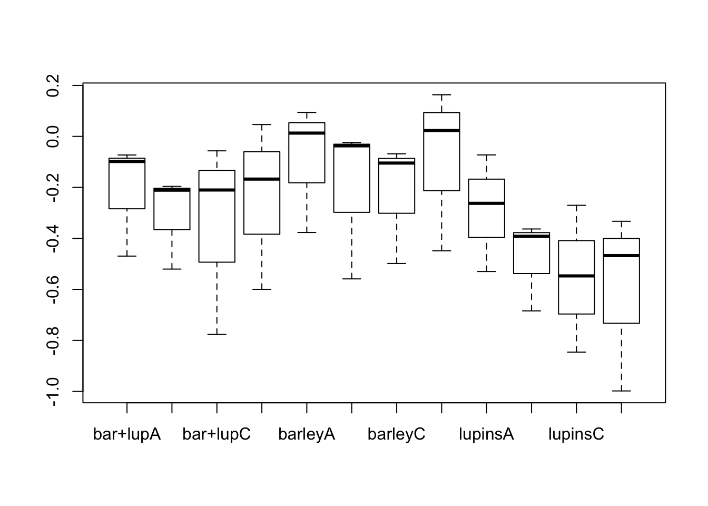
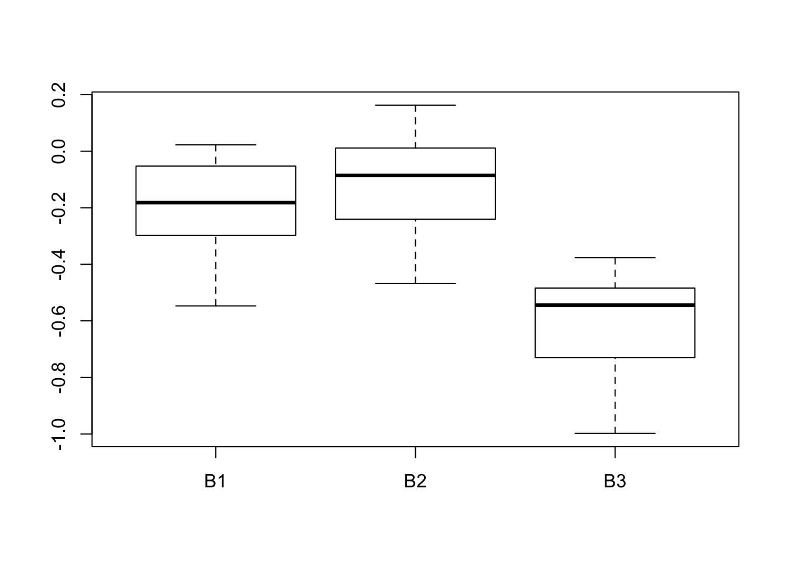

Chapter 1 ANOVA with Blocks
See RCBD_Equations in Notability. See RCBD&ExpDesign in ExplainEverything
1.1 Learning Objectives for Chapter
- Determine when it maybe advantageous to use blocking of experimental units.
- Design simple experiments where experimental units are blocked.
- Identify RCBD experiments based on a description of how treatments were assigned to experimental units.
- Given an example scenario, assign treatments to plots for a RCBD
- State null and alternative hypotheses for the RCBD.
- Perform the ANOVA for a Randomized Complete Block Design.
- Explain how variance is partitioned in an ANOVA with blocks design.
- Calculate F ratios for the groups and blocks.
- Compare the effects of analyzing data with and without blocks.
- Interpret the results of the RCBD ANOVA and answer the relevant research questions.
1.2 Randomized Complete Block Design
In chapter 9 we discussed the approach of using an Analysis of Variance (ANVOA) when comparing multiple treatments from a complete randomized experimental design (CRD). This chapter will look at the experimental design referred to as a randomized complete block design (RCBD). The objective of the block design is to account for outside variability that may affect the experiment, but is not controlled for in the orgiinal design. For example, say a two-way ANOVA (i.e., examination of two independent factors on a dependent variable) aapproach was applied to examine the effects of fertilizer and irrigation on plots of wildgrass growth in a large field. Given the intrinsic variability of differences in the feild (e.g., soil composition, slope, irradiance), blocks may be used to minimize these exteraneous factors of variability among the plots within groups (i.e., blocks). The main objective is to reduce the experimental error within each block, thus providing a more robust treatment effect as external confounding effects are reduced by the design.
In Randomized Complete Block Design (RCBD) each block will contain a complete set of treatments (e.g., one replicate from each treatment in one block), thus any difference among blocks will not be a result of a specific treatment. The variability associated with each block can then be estimated as a seperate source of variation for the complete design. The advantage here is that by accounting for this sepertae “block variation” from the design, a significant portion of experimental error will be removed, and treatment effects may be pronounced during analysis. That is, the greater variability among blocks, the more robust the design becomes. However, if there is no indication of the field having a significant source of intrinsic variability–as in the example stated above–a completely randomized design (CRD) would be more efficent. This is becasue the CRD without blocks has more degrees of freedom applied to the within treatment differences.
When designing an experiment with blocks, the goal is to provide uniformity of the experimental unit within blocks. For example, if performing an experiment on clams, grouping clams according to size class would be an appropriate characteristic to group. Alternatively, for plants, a grouping characteristic may be equal-sized plots within the field that span a known variation in the topography, such as gradual slope. Once experimental units have been seperated into blocks, treatments are assigned randomly within a block, for each block. For example, say juvenile clams at three different size classes (1–2, 4–5, 8–9 mm in shell length) were blocked and three treatment levels of temperature were appllied to examine feeding rates. In this design, 1 replicate at each treatment level (a-c) was randomly assinged to a block (1.1).
Figure 1.1: Juvenile clam feeding rates examined at (a) ambient temperature, (b) +2 °C, and (c) +5 °C.
1.3 Model and Partitioning of Variance with Blocks
In analysis of variance we use data to calculate the total variation among observations: variation between groups and variation within groups. When we incorporate blocks into an ANOVA, variability within is now split between “blocks” and “within” (1.2).
Figure 1.2: Sum of squares breakdwon for ANOVA with randomized complete block design.
Recall that we can use a linear equation to calculate the value of any observation in the experiment. When we assign each r replicate of each k treatment randomly to each b block, we have constructed a “Randomized Complete Block Design.” The model for this design states that each observation is a random draw from a normal distribution and the linear model is additive where the treatment mean is the overall mean plus a treatment and block effect. The model is written as follows:
\[\begin{align} &Y_{ij} = \mu_{..} + \tau_i + \beta_j + \epsilon_{ij} \quad \quad i = 1, \dots, k, \quad j = 1, \dots, r \\[10pt] &\epsilon_{ij} \sim iid \ N(0, \sigma^2) \\[15pt] &\quad \quad \text{where} \\[15pt] &\mu_{..} \quad \text{is the overall mean} \quad \mu_{..} = \frac{1}{k}\sum_{i = 1}^{k} \mu_{i.}\\[15pt] &\tau_i \quad \text{is the effect of treatment i } \\[15pt] &\beta_j \quad \text{is the effect of blocks j } \\[15pt] &\epsilon_{ij} \quad \text{is the experimental error for treatment i and replicate j} \\[15pt] & iid \quad \text{means "independent and identically distributed"} \tag{1.1} \end{align}\]
When we do not know the parameters of the actual distributions, which is usually the case, parameters are estimated and each observation is partitioned as follows:
\[\begin{align} &Y_{ij} = \hat{\mu}_{..} + \hat{\tau}_i + \hat{\beta}_j + \hat{\epsilon}_{ij} \\[10pt] &= \bar{Y}_{..} + \bar{Y}_{i.} + \bar{Y}_{j.} + e_{ij} \\[15pt] {where} \\[15pt] &\bar{Y}{..} \quad \text{is the overall average calculated as } \frac{1}{k}\sum_{i = 1}^{k} \bar{Y}_{i.}\ \\[15pt] &\bar{Y}_{i.} \quad \text{is the average for treatment i} \\[15pt] &\bar{Y}_{j.} \quad \text{is the average for blocks j} \\[15pt] &e_{ij} \quad \text{is the residual error for treatment i and repetition j} \\[15pt] \tag{1.2} \end{align}\]
Based on the model above, each observation is partitioned into components:
-overall mean, which is estimated with the average of treatment averages,
treatment effects, which are estimated as the differences between treatment averages and overall average,
block effects, which are estimated as the differences between block averages and overall average,
error, which is estimated with the residual or difference bewtween observation and treatment average.
\[\begin{align} Y_{ij} &= \bar{Y}_{..} + \hat{\tau}_i + \hat{\beta}_j + \hat{\epsilon}_{ij} \\[15pt] Y_{ij}- \bar{Y}_{..} &= \hat{\tau}_i + \hat{\beta}_j + \hat{\epsilon}_{ij} \\[15pt] Y_{ij}- \bar{Y}_{..} &= (\bar{Y}_{i.} - \bar{Y}_{..})+ (\bar{Y}_{j.} - \bar{Y}_{..}) + (\bar{Y}_{ij} - \bar{Y}_{i.} - \bar{Y}_{j.} ) \\[15pt] \tag{1.3} \end{align}\]
The total deviation from observation to overall average is partitioned into the deviation from treatment and block averages to overall average plus residual, where the residual is the difference between observation, treatment average and block average. It can be shown that the sum of all total deviations squared equals the sum of squared estimated treatment effects, plus block effects, plus the sum of squared residuals: total sum of squares equals treatment sum of squares plus block sum of squares plus residual sum of squares.
\[\begin{align} \sum_{i=1}^k \sum_{j=1}^r (Y_{ij}- \bar{Y}_{..})^2 &= \sum_{i=1}^k \sum_{j=1}^r (\bar{Y}_{i.} - \bar{Y}_{..})^2 + \sum_{i=1}^k \sum_{j=1}^r (\bar{Y}_{j.} - \bar{Y}_{..})^2 + \sum_{i=1}^k \sum_{j=1}^r (\bar{Y}_{ij} - \bar{Y}_{i.} - \bar{Y}_{j.})^2 \\[15pt] TSS &= SST + SSB + SSE\\[15pt] \text{where} \\[15pt] TSS &= \sum_{i=1}^k \sum_{j=1}^r (Y_{ij}- \bar{Y}_{..})^2 \\[15pt] SST &= \sum_{i=1}^k \sum_{j=1}^r (\bar{Y}_{i.} - \bar{Y}_{..})^2 = \ r \ \sum_{i=1}^k (\bar{Y}_{i.} - \bar{Y}_{..})^2\\[15pt] SSB &= \sum_{i=1}^k \sum_{j=1}^r (\bar{Y}_{j.} - \bar{Y}_{..})^2 = \ k \ \sum_{i=1}^k (\bar{Y}_{j.} - \bar{Y}_{..})^2\\[15pt] SSE &= \sum_{i=1}^k \sum_{j=1}^r (\bar{Y}_{ij} - \bar{Y}_{i.} - \bar{Y}_{j.})^2\\[15pt] \tag{1.4} \end{align}\]
1.4 Degrees of Freedom and ANOVA Table
Recall the calculation of the degrees of freedom for a CRD:
Total df \[rk - 1\] Treatment df \[k - 1\] Residual df \[k(r-1)\]
And now for a RCBD: Total df \[rk - 1\] Treatment df \[k - 1\] Block df \[r-1\] Residual df \[(k-1)(r-1)\]
The equations above show how each observation and the total variation are partitioned into treatments, blocks, and residuals. The total sum of squares is partitioned into SS of treatments, blocks, and SS of residual or error, and dividing the SS by each respective df, we obtain mean squares which provides an estimator of variance based on each source of variation.
| Source | df | Sum of Squares (SS) | Mean Squares (MS) | Calculated F |
|---|---|---|---|---|
| Total | k r - 1 | TSS | ||
| Blocks | r - 1 | SSB | MSB | MSB / MSE |
| Treatments | k - 1 | SST | MST | MST / MSE |
| Within Treatments | (k-1)(r-1) | SSE | MSE |
Similar to how an ANOVA for a CRD, the table above now has a block source of variation (RCBD), and the sums of squares, mean squares and calculated F are all statistics. The values basd on one sample are specific realized values of the random variables, which have their own expected values variances and distributions. If the null hypothesis that all treatment means are the same is true and all assumptions are correct, the calculated F has an F distribution with mean or expectation equal to \(dfe/(dfe - 2)\), where dfe is the residual or error degrees of freedom.
1.5 Exercises and Solutions
1.6 Homework
1.7 Laboratory Exercises
1.7.1 Plant Sciences
Prepare an .Rmd document starting with the following text, where you substitute the corresponsing information for author name and date.
---
title: "Lab06 RCBD Anova"
author: "YourFirstName YourLastName"
date: "enter date here"
output: html_document
---1.7.1.1 Instructions
For this lab you will modify and submit this file with the file name changed so it has your email ID (the part before @) in lower case instead of “email.” Do not add spaces to the file name.
This is a markdown document. You will type your code and run it one line at a time as you add it in the lines indicated below. Add code ONLY in the areas between ```{r} and ```. These areas are highlighted with a light grey color. Text outside those bookends will be interpreted as simple text, not code. Experiment by running each line and modifying it you get the desired result. Keep the lines that work and move on. At any time you can see if your document “knits” or not by clicking on the Knit to HTML icon at the top. Once you have completed all work, knit your document and save the html file produced with the same file name but with an html extension (Lab06email.html).
Submit BOTH files for your lab report using the appropriate Canvas tool
For each part and question below, type your code in the grey area below, between the sets of back-ticks (```) to perform the desired computation and get output. Type your answers below the corresponding grey area.
In this exercise we analyze the data resulting from an experiment at the UC Davis Plant Sciences research fields. These are based on the same experiment used in Lab 05, but now we use the information that the plots were actually in spatial blocks, and we will use the average of each treatment in each block. The data and description of the experimental setup have been simplified to facilitate understanding. For the purpose of this lab we will consider that the experiment was designed as a Randomized Complete Block Design (RCBD) in which each of 12 treatments were applied randomly to a plot in each of 3 blocks. (Simulated block effects of 0.50, 0.25, and -0.75 were added to logMass observations in block 1, 2 and 3 to show block effects). Blocks were defined as contiguous areas that were more or less homogeneous in soil and plant properties prior to the experiment. Assume that the variances of the errors or residuals are the same in all treatments. Each observation represents the average mass of seeds produced by 4-5 medusahead plants (logMass). Data were log transformed as logMass = log(seedMass + 0.3) to achieve normality and equality of variances.
Treatments resulted from combining two levels of nitrogen fertilization (n: no fertilizer added and N: nitrogen added), two levels of watering (w: no water other than rain, W: with water added) and three environments (s: areas without addition of seed representing the typical California Annual Grassland, S: areas where native perennial grasses were seeded, E: edge between seeded and unseeded areas). This resulted in a factorial set of treatments, but we ignore this for now. Factorial treatments is a topic for a later chapter.
This exercise has 4 parts. First we read in and inspect the data using averages and box plots. Second, data are analyzed as if they came from a Completely Randomized Design, ignoring the blocking. We do this to be able to assess the impact of using a block design by comparison. Third, we compute the ANOVA for the RCBD using basic functions for calculations. Each observation is partitioned into the components indicated by the model and then the corresponding sums of squares (SS) and degreees of freedom (df) are computed. Finally, the RCBD analysis is repeated using the specific R functions. Results are interpreted and compared to the CRD approach.
1.7.1.2 Part 1. Read in, inspect and summarize data [15 points]
Read in the data. Create a table where all observations are displayed by treatment (rows) and block (columns), and include the marginal treatment and block averages. Make boxplots for the logMass by treatment and by block.
# install.packages(c("tables", "pander","emmeans"))
library(tables)
library(pander)
library(emmeans)
seedB <- read.table(header = TRUE, text = "
Treatment block logMass
wnE Block1 -0.210836005431437
wNE Block1 1.55288938986704
WnE Block1 0.055235139345024
WNE Block1 0.835167804254832
wns Block1 1.24627323200302
wnS Block1 0.540066519204629
wNs Block1 1.57199447282598
wNS Block1 1.23870355136554
Wns Block1 0.986995928669204
WnS Block1 -0.170749893385349
WNs Block1 0.664136397253749
WNS Block1 0.736888706368722
wnE Block2 0.041449411568171
wNE Block2 1.428708818124
WnE Block2 0.319992367391131
WNE Block2 1.03098409320956
wns Block2 0.643797294741899
wnS Block2 -0.511211922892043
wNs Block2 1.84080033644501
wNS Block2 0.813650468511317
Wns Block2 1.69986757761409
WnS Block2 -0.154140967169852
WNs Block2 1.423732115253
WNS Block2 0.2968644855256
wnE Block3 -0.655926955677754
wNE Block3 -0.27934035269992
WnE Block3 -0.5542030003591
WNE Block3 -1.12888399571028
wns Block3 0.45627765803375
wnS Block3 -1.04875645623447
wNs Block3 0.49759250163951
wNS Block3 -0.097792008066854
Wns Block3 -0.513584856362292
WnS Block3 -1.36796547632004
WNs Block3 1.02290365359422
WNS Block3 -0.527897010482484
"
)
seedB$Treatment <- factor(as.character(seedB$Treatment), levels = c("wns", "wnE", "wnS", "wNs", "wNE", "wNS", "Wns", "WnE", "WnS", "WNs", "WNE", "WNS"))
# If the data were available in a .csv file in the working directory,
# it could be read in with the following line.
# seedB <- read.csv(file = "Lab06SeedMassData.txt", header = TRUE)
str(seedB) # The response variable is already log transformed.## 'data.frame': 36 obs. of 3 variables:
## $ Treatment: Factor w/ 12 levels "wns","wnE","wnS",..: 2 5 8 11 1 3 4 6 7 9 ...
## $ block : Factor w/ 3 levels "Block1","Block2",..: 1 1 1 1 1 1 1 1 1 1 ...
## $ logMass : num -0.2108 1.5529 0.0552 0.8352 1.2463 ...boxplot(logMass ~ Treatment, seedB) # make boxplots for the logMass by treatmentboxplot(logMass ~ block, seedB) # make boxplots for the logMass by block# Read help about function tabular()
pander(tabular((Treatment + 1) * logMass * mean ~ (block + 1), data = seedB))Treatment |
block Block1 |
Block2 |
Block3 |
All |
||
|---|---|---|---|---|---|---|
| wns | logMass | mean | 1.24627 | 0.64380 | 0.45628 | 0.78212 |
| wnE | logMass | mean | -0.21084 | 0.04145 | -0.65593 | -0.27510 |
| wnS | logMass | mean | 0.54007 | -0.51121 | -1.04876 | -0.33997 |
| wNs | logMass | mean | 1.57199 | 1.84080 | 0.49759 | 1.30346 |
| wNE | logMass | mean | 1.55289 | 1.42871 | -0.27934 | 0.90075 |
| wNS | logMass | mean | 1.23870 | 0.81365 | -0.09779 | 0.65152 |
| Wns | logMass | mean | 0.98700 | 1.69987 | -0.51358 | 0.72443 |
| WnE | logMass | mean | 0.05524 | 0.31999 | -0.55420 | -0.05966 |
| WnS | logMass | mean | -0.17075 | -0.15414 | -1.36797 | -0.56429 |
| WNs | logMass | mean | 0.66414 | 1.42373 | 1.02290 | 1.03692 |
| WNE | logMass | mean | 0.83517 | 1.03098 | -1.12888 | 0.24576 |
| WNS | logMass | mean | 0.73689 | 0.29686 | -0.52790 | 0.16862 |
| All | logMass | mean | 0.75390 | 0.73954 | -0.34980 | 0.38121 |
ANSWER THE FOLLOWING QUESTIONS:
Based on the boxplots, what trends appear in the treatments? Does it look like water addition, N addition or type of competitors affects medusahead seed production? Look for patterns and describe them.
Discuss the effects of competition by seeded (S) and unseeded (s) species on medusahead seed production.
What treatments seem best to reduce seed production in medusahead?
Explain what the tabular() function did here.
1.7.1.3 Part 2. Analyze data ignoring the blocking design [25 points]
Modify the code you used in the CRD lab to conduct an ANOVA of the present data ignoring the blocking design. For this part you have to assume that plots were assigned to treatments completely randomly, instead of making sure that each treatment was in each block.
ANSWER THE FOLLOWING QUESTIONS:
Report the ANOVA table and the Least Significant Difference (LSD). The LSD is the minimum difference between two treatment averages for the corresponding treatment means to be considered statistically different.
Report a table with the sorted treatment averages and the corresponding standard errors. The table created has confidence intervals for each treatment mean.
Find the relevant equations in the textbook and calculate the CI for the first treatment “by hand” using equations from the book. Show the calculations in R code.
# Conduct an ANOVA test on logMass by treatment.
crd.mod <- lm(formula = logMass ~ Treatment, data = seedB)
pander(anova(crd.mod))| Df | Sum Sq | Mean Sq | F value | Pr(>F) | |
|---|---|---|---|---|---|
| Treatment | 11 | 12.01 | 1.092 | 1.896 | 0.09213 |
| Residuals | 24 | 13.83 | 0.5761 | NA | NA |
# Read help about function lsmeans()
crd.mod.means <- emmeans(crd.mod, "Treatment")
str(summary(crd.mod.means))## Classes 'summary_emm' and 'data.frame': 12 obs. of 6 variables:
## $ Treatment: Factor w/ 12 levels "wns","wnE","wnS",..: 1 2 3 4 5 6 7 8 9 10 ...
## $ emmean : num 0.782 -0.275 -0.34 1.303 0.901 ...
## $ SE : num 0.438 0.438 0.438 0.438 0.438 ...
## $ df : num 24 24 24 24 24 24 24 24 24 24 ...
## $ lower.CL : num -0.12233 -1.17955 -1.24441 0.39902 -0.00369 ...
## $ upper.CL : num 1.687 0.629 0.564 2.208 1.805 ...
## - attr(*, "estName")= chr "emmean"
## - attr(*, "clNames")= chr "lower.CL" "upper.CL"
## - attr(*, "pri.vars")= chr "Treatment"
## - attr(*, "mesg")= chr "Confidence level used: 0.95"pander(
summary(crd.mod.means)[
order(summary(crd.mod.means)$emmean),
]
)| Treatment | emmean | SE | df | lower.CL | upper.CL | |
|---|---|---|---|---|---|---|
| 9 | WnS | -0.5643 | 0.4382 | 24 | -1.469 | 0.3402 |
| 3 | wnS | -0.34 | 0.4382 | 24 | -1.244 | 0.5645 |
| 2 | wnE | -0.2751 | 0.4382 | 24 | -1.18 | 0.6293 |
| 8 | WnE | -0.05966 | 0.4382 | 24 | -0.9641 | 0.8448 |
| 12 | WNS | 0.1686 | 0.4382 | 24 | -0.7358 | 1.073 |
| 11 | WNE | 0.2458 | 0.4382 | 24 | -0.6587 | 1.15 |
| 6 | wNS | 0.6515 | 0.4382 | 24 | -0.2529 | 1.556 |
| 7 | Wns | 0.7244 | 0.4382 | 24 | -0.18 | 1.629 |
| 1 | wns | 0.7821 | 0.4382 | 24 | -0.1223 | 1.687 |
| 5 | wNE | 0.9008 | 0.4382 | 24 | -0.003689 | 1.805 |
| 10 | WNs | 1.037 | 0.4382 | 24 | 0.1325 | 1.941 |
| 4 | wNs | 1.303 | 0.4382 | 24 | 0.399 | 2.208 |
In the first part of the chunk above we use the lm function to tell R what model we want to fit and what data to use for it; lm' stands for *linear model*. The model is given in theformulaargument. The formulalogProt ~ Treatment` means “model the variable logProt with an overall mean and a Treatment effect” and is equivalent to \(Y_{ij} = \mu_{i.} + \epsilon_{ij} = \mu_{..} + \tau_{i.} + \epsilon_{ij}\). In this case i goes from 1 to 12 because there are 12 treatments, and the range of j is 1 to 3, because there are 3 blocks per treatment.
str(crd.mod) # Look at what is inside the model object.## List of 13
## $ coefficients : Named num [1:12] 0.782 -1.057 -1.122 0.521 0.119 ...
## ..- attr(*, "names")= chr [1:12] "(Intercept)" "TreatmentwnE" "TreatmentwnS" "TreatmentwNs" ...
## $ residuals : Named num [1:36] 0.0643 0.6521 0.1149 0.5894 0.4642 ...
## ..- attr(*, "names")= chr [1:36] "1" "2" "3" "4" ...
## $ effects : Named num [1:36] -2.287 -1.187 -1.418 1.432 0.862 ...
## ..- attr(*, "names")= chr [1:36] "(Intercept)" "TreatmentwnE" "TreatmentwnS" "TreatmentwNs" ...
## $ rank : int 12
## $ fitted.values: Named num [1:36] -0.2751 0.9008 -0.0597 0.2458 0.7821 ...
## ..- attr(*, "names")= chr [1:36] "1" "2" "3" "4" ...
## $ assign : int [1:12] 0 1 1 1 1 1 1 1 1 1 ...
## $ qr :List of 5
## ..$ qr : num [1:36, 1:12] -6 0.167 0.167 0.167 0.167 ...
## .. ..- attr(*, "dimnames")=List of 2
## .. .. ..$ : chr [1:36] "1" "2" "3" "4" ...
## .. .. ..$ : chr [1:12] "(Intercept)" "TreatmentwnE" "TreatmentwnS" "TreatmentwNs" ...
## .. ..- attr(*, "assign")= int [1:12] 0 1 1 1 1 1 1 1 1 1 ...
## .. ..- attr(*, "contrasts")=List of 1
## .. .. ..$ Treatment: chr "contr.treatment"
## ..$ qraux: num [1:12] 1.17 1.13 1.05 1.05 1.12 ...
## ..$ pivot: int [1:12] 1 2 3 4 5 6 7 8 9 10 ...
## ..$ tol : num 0.0000001
## ..$ rank : int 12
## ..- attr(*, "class")= chr "qr"
## $ df.residual : int 24
## $ contrasts :List of 1
## ..$ Treatment: chr "contr.treatment"
## $ xlevels :List of 1
## ..$ Treatment: chr [1:12] "wns" "wnE" "wnS" "wNs" ...
## $ call : language lm(formula = logMass ~ Treatment, data = seedB)
## $ terms :Classes 'terms', 'formula' language logMass ~ Treatment
## .. ..- attr(*, "variables")= language list(logMass, Treatment)
## .. ..- attr(*, "factors")= int [1:2, 1] 0 1
## .. .. ..- attr(*, "dimnames")=List of 2
## .. .. .. ..$ : chr [1:2] "logMass" "Treatment"
## .. .. .. ..$ : chr "Treatment"
## .. ..- attr(*, "term.labels")= chr "Treatment"
## .. ..- attr(*, "order")= int 1
## .. ..- attr(*, "intercept")= int 1
## .. ..- attr(*, "response")= int 1
## .. ..- attr(*, ".Environment")=<environment: R_GlobalEnv>
## .. ..- attr(*, "predvars")= language list(logMass, Treatment)
## .. ..- attr(*, "dataClasses")= Named chr [1:2] "numeric" "factor"
## .. .. ..- attr(*, "names")= chr [1:2] "logMass" "Treatment"
## $ model :'data.frame': 36 obs. of 2 variables:
## ..$ logMass : num [1:36] -0.2108 1.5529 0.0552 0.8352 1.2463 ...
## ..$ Treatment: Factor w/ 12 levels "wns","wnE","wnS",..: 2 5 8 11 1 3 4 6 7 9 ...
## ..- attr(*, "terms")=Classes 'terms', 'formula' language logMass ~ Treatment
## .. .. ..- attr(*, "variables")= language list(logMass, Treatment)
## .. .. ..- attr(*, "factors")= int [1:2, 1] 0 1
## .. .. .. ..- attr(*, "dimnames")=List of 2
## .. .. .. .. ..$ : chr [1:2] "logMass" "Treatment"
## .. .. .. .. ..$ : chr "Treatment"
## .. .. ..- attr(*, "term.labels")= chr "Treatment"
## .. .. ..- attr(*, "order")= int 1
## .. .. ..- attr(*, "intercept")= int 1
## .. .. ..- attr(*, "response")= int 1
## .. .. ..- attr(*, ".Environment")=<environment: R_GlobalEnv>
## .. .. ..- attr(*, "predvars")= language list(logMass, Treatment)
## .. .. ..- attr(*, "dataClasses")= Named chr [1:2] "numeric" "factor"
## .. .. .. ..- attr(*, "names")= chr [1:2] "logMass" "Treatment"
## - attr(*, "class")= chr "lm"# This will let us know what we can extract from the model.The output showing the structure of the fitted model can be confusing and overwhelming at first, but it turns out to be simple once we know what to look for. The model is a list of lists. Each $ is the beginning of a list, where the $ is followed by the name of that list. There are various levels of lists nested. At the top, we see List of 13 which means that crd.mod is a list with 13 elements. The first element is called coefficient and is a named numeric vector with 1 row and 12 columns (1 per treatment). The second element is the vector of residuals which contains one residual for each of the 287 observations. We will calculate those residual “by hand” below, but we could cross check them with the ones already calculated by R and saved in the model object.
If we use summary(crd.mod) we obtain a different object that contains the standard deviation of the residuals already calculated and included with the name sigma. To see the structure of summary(crd.mod) run the code str(summary(crd.mod)) and find $sigma in the output (not shown here). Below, we extract this standard deviation from the summary and square it to obtain the MSE. The result is saved in the object called crd.mod.mse.
The LSD is the minimum difference necessary between two treatment averages for the means to be considered “significantly” different. Recall that the difference between two averages is a random variable that comes from a linear combination of two other random variables that are independent. The variance of the difference is the sum of the variances of the averages. The variance of each average is the variance of the error divided by the number of observations used to calculate the average, in this case n is 3, one per block. Since we assume that both variances are equal, we multiply the result time 2.
# Extract sigma, the residual standard deviation
crd.mod.mse <- summary(crd.mod)$sigma ^ 2
# Extract the df for the residuals.
(dfe <- crd.mod$df.residual) # df of the residual or “within” error)## [1] 24# Calculate the critical t value for the LSD.
(t.crit <- qt(p = 0.975, df = dfe)) # Use alpha = 0.05## [1] 2.063898562reps <- length(seedB$logMass)/length(levels(seedB$Treatment))
# Calculate the LSD. Note that the MSE is divided by the number of reps.
# If the number of reps were different for some treatments, we
# would have to use a formula that accounts for this.
(crd.mod.lsd <- t.crit * sqrt(2 * crd.mod.mse / reps)) ## hint: how many replicates for each treatment? This is different from the previous lab.## [1] 1.279073478
ANSWER THE FOLLOWING QUESTIONS:
Are the trends observed in Part 1 significant?
Based on the LSD, did seeding (S vs. s) have a significant effect when water and nitrogen were added?
Explain where the numbers in the calculation of the LSD come from and why the calculation of the LSD has the MSE multiplied by two and divided by 3.
Describe the meaning of the columns in the output from this code emmeans(crd.mod, “Treatment”) .
1.7.1.4 Part 3. RCBD Sum of Squares and Degrees of Freedom [35 points]
Now consider that the experiment was actually an RCBD and analyze it accordingly.
First, use basic functions to partition the total sum of squares of logMass into treatments, blocks and residual or error.
Recall that the model for the RCBD partitions each observation into overall mean, treatment effect, block effect and random error:
\[Y_{ij} = \mu_{..} + \tau_{i.} + B_{.j} + \epsilon_{ij} \\ \epsilon_{ij} \sim N(0, \ \sigma)\]
Because we do not know the values of the parameters (mean, treatment effects, block effects), we use estimates obtained with the following equations:
\[Y_{ij} = \hat{\mu}_{..} + \hat{\tau}_{i.} + \hat{B}_{.j} + \hat{\epsilon}_{ij}\]
where the overall average estimates the overall mean (recall that the “hat” stands for “estimated”),
\[\hat{\mu}_{..} = \bar{Y}_{..} = \displaystyle\sum_{i=1}^{k} \displaystyle\sum_{j=1}^{r} \frac{Y_{ij}}{r \ k}\]
the difference between each treatment average and the overall average estimates the treatment effect \(\tau_{i.}\),
\[\hat{\tau}_{i.} = \hat{\mu}_{i.} - \hat{\mu}_{..} = \left(\displaystyle\sum_{j=1}^{r}\frac{Y_{ij}}r\right)-\bar{Y}_{..} = \bar{Y}_{i.}-\bar{Y}_{..}\]
the difference between each block average and the overall average estimates the block effect \(B_j\),
\[\hat{B}_{.j} = \hat{\mu}_{.j} - \hat{\mu}_{..} = \left(\displaystyle\sum_{i=1}^{k}\frac{Y_{ij}} k \right)-\bar{Y}_{ij}\]
and the estimated random error \(\epsilon\) is calculated by difference
\[\hat{\epsilon}_{ij} = e_{ij} = Y_{ij} - \hat{\tau}_{i.} - \hat{B}_{.j}\]
The sums of squares are calculated by creating columns for \(\hat{B}_j\), \(\hat{\tau}_i\), and \(\hat{\epsilon}_{ij}\) and then summing the squares of the values in each column.
Start by creating a column with the treatment averages corresponding to each observation. First, the aggregate() function creates a column wiht as many values as treatments. Then, the merge function puts the correspoding treatment average in each of the observations in the complete data table. The all = TRUE argument ensures that each treatment average is repeated over all observations in that treatment.
# Calculate treatment averages using aggregate()
logMass.Trt.avgs <- aggregate(logMass ~ Treatment, data = seedB, FUN = mean)
names(logMass.Trt.avgs)[2] <- "Trt.AvgLogMass"
# Create a column for treatment averages in data frame
seedB <- merge(seedB, logMass.Trt.avgs, by = "Treatment", all = TRUE)The process is repeated for block averages:
# Calculate block averages using aggregate()
logMass.block.avgs <- aggregate(logMass ~ block, data = seedB, FUN = mean)
names(logMass.block.avgs)[2] <- "blk.AvgLogMass"
# Create a column for block averages in data frame
seedB <- merge(seedB, logMass.block.avgs, by = "block", all = TRUE)Then, we add columns for total deviation of observation from the overall average \(Y_{ij} - \bar{Y}_{..}\), deviation of treatment average from overall average (or treatment effect \(\hat{\tau}_i = \hat{\mu}_{.i} - \hat{\mu}_{..}\)), deviation of block average from overall average (block effect \(\hat{B}_j = \hat{\mu}_{.j} - \hat{\mu}_{..}\)) and deviation of observation from treatment average.
seedB$total.fx <- seedB$logMass - mean(seedB$logMass) # total deviation from average
seedB$block.fx <- seedB$blk.AvgLogMass - mean(seedB$logMass) # block effects
seedB$Trt.fx <- seedB$Trt.AvgLogMass - mean(seedB$logMass) # treatment effects
seedB$res <- seedB$logMass - seedB$block.fx - seedB$Trt.fx - mean(seedB$logMass) # residuals
seedB # See how table has each observations partitioned into components.## block Treatment logMass Trt.AvgLogMass blk.AvgLogMass
## 1 Block1 wnE -0.21083600543 -0.27510451651 0.7538971035
## 2 Block1 WnS -0.17074989339 -0.56428544563 0.7538971035
## 3 Block1 wnS 0.54006651920 -0.33996728664 0.7538971035
## 4 Block1 wNE 1.55288938987 0.90075261843 0.7538971035
## 5 Block1 WNs 0.66413639725 1.03692405537 0.7538971035
## 6 Block1 wNs 1.57199447283 1.30346243697 0.7538971035
## 7 Block1 WnE 0.05523513935 -0.05965849787 0.7538971035
## 8 Block1 Wns 0.98699592867 0.72442621664 0.7538971035
## 9 Block1 wNS 1.23870355137 0.65152067060 0.7538971035
## 10 Block1 WNE 0.83516780425 0.24575596725 0.7538971035
## 11 Block1 wns 1.24627323200 0.78211606159 0.7538971035
## 12 Block1 WNS 0.73688870637 0.16861872714 0.7538971035
## 13 Block2 wnE 0.04144941157 -0.27510451651 0.7395411732
## 14 Block2 WnE 0.31999236739 -0.05965849787 0.7395411732
## 15 Block2 Wns 1.69986757761 0.72442621664 0.7395411732
## 16 Block2 WNE 1.03098409321 0.24575596725 0.7395411732
## 17 Block2 WnS -0.15414096717 -0.56428544563 0.7395411732
## 18 Block2 wnS -0.51121192289 -0.33996728664 0.7395411732
## 19 Block2 wns 0.64379729474 0.78211606159 0.7395411732
## 20 Block2 WNs 1.42373211525 1.03692405537 0.7395411732
## 21 Block2 wNs 1.84080033645 1.30346243697 0.7395411732
## 22 Block2 WNS 0.29686448553 0.16861872714 0.7395411732
## 23 Block2 wNE 1.42870881812 0.90075261843 0.7395411732
## 24 Block2 wNS 0.81365046851 0.65152067060 0.7395411732
## 25 Block3 wNS -0.09779200807 0.65152067060 -0.3497980249
## 26 Block3 wNs 0.49759250164 1.30346243697 -0.3497980249
## 27 Block3 wnE -0.65592695568 -0.27510451651 -0.3497980249
## 28 Block3 WNs 1.02290365359 1.03692405537 -0.3497980249
## 29 Block3 WnS -1.36796547632 -0.56428544563 -0.3497980249
## 30 Block3 Wns -0.51358485636 0.72442621664 -0.3497980249
## 31 Block3 wNE -0.27934035270 0.90075261843 -0.3497980249
## 32 Block3 wns 0.45627765803 0.78211606159 -0.3497980249
## 33 Block3 WNE -1.12888399571 0.24575596725 -0.3497980249
## 34 Block3 wnS -1.04875645623 -0.33996728664 -0.3497980249
## 35 Block3 WNS -0.52789701048 0.16861872714 -0.3497980249
## 36 Block3 WnE -0.55420300036 -0.05965849787 -0.3497980249
## total.fx block.fx Trt.fx res
## 1 -0.59204942271 0.3726836863 -0.6563179338 -0.30841517517
## 2 -0.55196331066 0.3726836863 -0.9454988629 0.02085186599
## 3 0.15885310193 0.3726836863 -0.7211807039 0.50735011960
## 4 1.17167597259 0.3726836863 0.5195392012 0.27945308519
## 5 0.28292297998 0.3726836863 0.6557106381 -0.74547134436
## 6 1.19078105555 0.3726836863 0.9222490197 -0.10415165039
## 7 -0.32597827793 0.3726836863 -0.4408719152 -0.25779004903
## 8 0.60578251139 0.3726836863 0.3432127994 -0.11011397422
## 9 0.85749013409 0.3726836863 0.2703072533 0.21449919451
## 10 0.45395438698 0.3726836863 -0.1354574500 0.21672815075
## 11 0.86505981472 0.3726836863 0.4009026443 0.09147348416
## 12 0.35567528909 0.3726836863 -0.2125946901 0.19558629298
## 13 -0.33976400571 0.3583277559 -0.6563179338 -0.04177382783
## 14 -0.06122104989 0.3583277559 -0.4408719152 0.02132310935
## 15 1.31865416034 0.3583277559 0.3432127994 0.61711360506
## 16 0.64977067593 0.3583277559 -0.1354574500 0.42690037004
## 17 -0.53535438445 0.3583277559 -0.9454988629 0.05181672254
## 18 -0.89242534017 0.3583277559 -0.7211807039 -0.52957239217
## 19 0.26258387746 0.3583277559 0.4009026443 -0.49664652277
## 20 1.04251869797 0.3583277559 0.6557106381 0.02848030397
## 21 1.45958691917 0.3583277559 0.9222490197 0.17901014356
## 22 -0.08434893175 0.3583277559 -0.2125946901 -0.23008199753
## 23 1.04749540085 0.3583277559 0.5195392012 0.16962844378
## 24 0.43243705123 0.3583277559 0.2703072533 -0.19619795801
## 25 -0.47900542535 -0.7310114422 0.2703072533 -0.01830123650
## 26 0.11637908436 -0.7310114422 0.9222490197 -0.07485849317
## 27 -1.03714037296 -0.7310114422 -0.6563179338 0.35018900300
## 28 0.64169023632 -0.7310114422 0.6557106381 0.71699104039
## 29 -1.74917889360 -0.7310114422 -0.9454988629 -0.07266858853
## 30 -0.89479827364 -0.7310114422 0.3432127994 -0.50699963084
## 31 -0.66055376998 -0.7310114422 0.5195392012 -0.44908152896
## 32 0.07506424076 -0.7310114422 0.4009026443 0.40517303861
## 33 -1.51009741299 -0.7310114422 -0.1354574500 -0.64362852080
## 34 -1.42996987351 -0.7310114422 -0.7211807039 0.02222227257
## 35 -0.90911042776 -0.7310114422 -0.2125946901 0.03449570455
## 36 -0.93541641764 -0.7310114422 -0.4408719152 0.23646693968Finally, we calculate the corresponding sums of squares and degrees of freedom, and prepare a complete analysis of variance table with columns for Source, SS, df, and MS. The anova table is transformed into a data frame and printed nicely with pander(). Calculate the F test and the critical F to test the null hypothesis (Ho) that mean seed production is the same in all treatments. Interpret the results.
# Sums of squares
paste("Total Sum of Squares = ", (ss.Tot <- sum(seedB$total.fx ^ 2)))## [1] "Total Sum of Squares = 25.840866888969"paste("Sum of Squares of Blocks = ", (ss.block <- sum(seedB$block.fx ^ 2)))## [1] "Sum of Squares of Blocks = 9.62003567079587"paste("Sum of Squares of Treatments = ", (ss.Trt <- sum(seedB$Trt.fx ^ 2)))## [1] "Sum of Squares of Treatments = 12.014222550334"paste("Sum of Squares of Residuals = ", (ss.Res <- sum(seedB$res ^ 2)))## [1] "Sum of Squares of Residuals = 4.20660866783908"# Degrees of freedom
paste("Treatment df = ", (df.Trt <- length(levels(seedB$Treatment)) - 1))## [1] "Treatment df = 11"paste("Block df = ", (df.block <- length(levels(seedB$block)) - 1))## [1] "Block df = 2"paste("Total df = ", (df.Tot <- length(seedB$logMass) - 1))## [1] "Total df = 35"paste("Residual or error df = ", (df.Res <- df.Tot - df.Trt - df.block))## [1] "Residual or error df = 22"# Mean squares and Fcalc
ms.Trt <- ss.Trt / df.Trt
ms.block <- ss.block / df.block
ms.Res <- ss.Res / df.Res
(Fcalc.Trt <- ms.Trt / ms.Res)## [1] 5.712070458(Fcalc.block <- ms.block / ms.Res)## [1] 25.15574914(Fcrit.Trt <- qf(p = 0.95, df1 = df.Trt, df2 = df.Res))## [1] 2.258518357(Fcrit.block <- qf(p = 0.95, df1 = df.block, df2 = df.Res))## [1] 3.443356779
ANSWER THE FOLLOWING QUESTIONS:
Can you conclude that there are differences among treatments? Why? Report the test statistic, your decision rule and your conclusion.
1.7.1.5 Part 4. ANOVA for RCBD using R functions.[25 points]
In this section we repeat the previosu analysis using the R functions aov() and anova() to obtain the same tests of the null hypothesis that all means are equal. Report the results of using each function and compare to the results from Part 2. Explain what is different and why. Discuss the effect of accounting for block differences.
# read help about function aov(), anova(), oneway.test()
summary(aov(formula = logMass ~ block + Treatment, data = seedB))## Df Sum Sq Mean Sq F value Pr(>F)
## block 2 9.620036 4.810018 25.15575 0.0000020671 ***
## Treatment 11 12.014223 1.092202 5.71207 0.00026273 ***
## Residuals 22 4.206609 0.191209
## ---
## Signif. codes: 0 '***' 0.001 '**' 0.01 '*' 0.05 '.' 0.1 ' ' 1rcbd.mod <- lm(formula = logMass ~ block + Treatment, data = seedB)
anova(rcbd.mod)## Analysis of Variance Table
##
## Response: logMass
## Df Sum Sq Mean Sq F value Pr(>F)
## block 2 9.6200357 4.8100178 25.15575 0.0000020671 ***
## Treatment 11 12.0142226 1.0922021 5.71207 0.00026273 ***
## Residuals 22 4.2066087 0.1912095
## ---
## Signif. codes: 0 '***' 0.001 '**' 0.01 '*' 0.05 '.' 0.1 ' ' 1
ANSWER THE FOLLOWING QUESTIONS:
How does the RCBD differ from the CRD analysis? Interpret the results of the RCBD and compare with the results of using a CRD model. Discuss situations when each approach may be better at detecting differences amonf treatments.
1.7.2 Animal Science
Prepare an .Rmd document starting with the following text, where you substitute the corresponsing information for author name and date.
---
title: "Lab06 RCBD Anova"
author: "YourFirstName YourLastName"
date: "enter date here"
output: html_document
---1.7.2.1 Instructions
For this lab you will modify and submit this file with the file name changed so it has your email ID (the part before @) in lower case instead of “email.” Do not add spaces to the file name.
This is a markdown document. You will type your code and run it one line at a time as you add it in the lines indicated below. Add code ONLY in the areas between ```{r} and ```. These areas are highlighted with a light grey color. Text outside those bookends will be interpreted as simple text, not code. Experiment by running each line and modifying it you get the desired result. Keep the lines that work and move on. At any time you can see if your document “knits” or not by clicking on the Knit to HTML icon at the top. Once you have completed all work, knit your document and save the html file produced with the same file name but with an html extension (Lab06email.html).
Submit BOTH files for your lab report using the appropriate Canvas tool
For each part and question below, type your code in the grey area below, between the sets of back-ticks (```) to perform the desired computation and get output. Type your answers below the corresponding grey area.
In this exercise we analyze the milk protein data modified from the Milk R dataset. Cows start producing milk when the calf is born, and the amount and composition of milk changes dramatically during the lactation period, which can last up to 20 weeks. This study looks at the change in milk protein concentration over four 5-week periods for cows fed three different diets: barley, lupines or a mix of barley and lupines. The data were modified to have a slightly non-normal distribution and they were aggregated into periods of lactation. Then, data were log transformed as logProt = log(protein - 2.64) to achieve normality and equality of variances. These data are based on the same experiment used in Lab05, but now we add the information that cows were actually in blocks, and we will use the average of each treatment in each block. For the purpose of this lab we will consider that the experiment was designed as a Randomized Complete Block Design (RCBD) in which each of 12 treatments were applied randomly to a cow in each of 3 blocks. (Simulated block effects of 0.10, 0.20, and -0.30 were added to logProt observations in blocks 1, 2 and 3). Cows were blocked by body weight. Assume that the variances of the errors or residuals are the same in all treatments. Each observation represents the average protein concentration over 4-45 weeks.
Treatments were combinations of a diet and lactation period. Diets were barley, lupin and a combination of barley and lupin. Lactation periods were weeks (A) 1-5, (B) 6-10, (C) 11-15 and (D) 15-19. This resulted in a factorial set of treatments, but we ignore this for now. Factorial treatments is a topic for a later chapter. Some cows did not have lactation periods that lasted 19 weeks, so the number of cows in period D is smaller than in other periods.
This exercise has 4 parts. First we read in and inspect the data using averages and box plots. Second, data are analyzed as if they came from a Completely Randomized Design, ignoring the blocking. We do this to be able to assess the impact of using a block design by comparison. Third, we compute the ANOVA for the RCBD using basic functions for calculations. Each observation is partitioned into the components indicated by the model and then the corresponding sums of squares (SS) and degreees of freedom (df) are computed. Finally, the RCBD analysis is repeated using the specific R functions. Results are interpreted and compared to the CRD approach.
1.7.2.2 Part 1. Read in, inspect and summarize data [15 points]
Read in the data. Create a table where all observations are displayed by treatment (rows) and block (columns), and include the marginal treatment and block averages. Make boxplots for the logProt by treatment and by block.
# install.packages(c("tables", "pander","emmeans"))
library(tables)
library(pander)
library(emmeans)
milk.protB <- read.table(header = TRUE, text = "
Treatment block logProt
bar+lupA B1 -0.0731037100734435
bar+lupB B1 -0.196101868349928
bar+lupC B1 -0.210267730933958
bar+lupD B1 -0.167489223975411
barleyA B1 0.0128826235040475
barleyB B1 -0.0370084934237159
barleyC B1 -0.0685472328542999
barleyD B1 0.0227519412374128
lupinsA B1 -0.262581988917979
lupinsB B1 -0.3916169129234
lupinsC B1 -0.547148905195592
lupinsD B1 -0.332935697972448
bar+lupA B2 -0.0984822162913345
bar+lupB B2 -0.210935792405121
bar+lupC B2 -0.0567371580442165
bar+lupD B2 0.0464364858012666
barleyA B2 0.0936734288425749
barleyB B2 -0.0243478396788622
barleyC B2 -0.104679084777041
barleyD B2 0.162878012463507
lupinsA B2 -0.0727764949797924
lupinsB B2 -0.363116935987831
lupinsC B2 -0.270329731838754
lupinsD B2 -0.467562992079467
bar+lupA B3 -0.469422318296023
bar+lupB B3 -0.52042415658816
bar+lupC B3 -0.776426735627286
bar+lupD B3 -0.599824055104792
barleyA B3 -0.376865498106334
barleyB B3 -0.558778120822771
barleyC B3 -0.498434059657074
barleyD B3 -0.448554872471514
lupinsA B3 -0.52988950832947
lupinsB B3 -0.684172163381795
lupinsC B3 -0.845858171586139
lupinsD B3 -0.99810334235182
"
)
# If the data were available in a .csv file in the working directory,
# it could be read in with the following line.
# milk.protB <- read.csv(file = "Lab06MilkProteinData.csv", header = TRUE)Now we inspect the structure of the data frame with str and create boxplots for the data as a function of treatment and block. Keep in mind that the data are transformed. In order to see the actual protein concentration, values have to be backtransformed by exponentiating and then adding 2.64.
str(milk.protB) # The response variable is already log transformed.## 'data.frame': 36 obs. of 3 variables:
## $ Treatment: Factor w/ 12 levels "bar+lupA","bar+lupB",..: 1 2 3 4 5 6 7 8 9 10 ...
## $ block : Factor w/ 3 levels "B1","B2","B3": 1 1 1 1 1 1 1 1 1 1 ...
## $ logProt : num -0.0731 -0.1961 -0.2103 -0.1675 0.0129 ...boxplot(logProt ~ Treatment, milk.protB) # make boxplots for the logProt by treatment
boxplot(logProt ~ block, milk.protB) # make boxplots for the logProt by block
# Read help about function "tabular"
pander(tabular((Treatment + 1) * logProt * mean ~ (block + 1), data = milk.protB))Treatment |
block B1 |
B2 |
B3 |
All |
||
|---|---|---|---|---|---|---|
| bar+lupA | logProt | mean | -0.07310 | -0.09848 | -0.4694 | -0.21367 |
| bar+lupB | logProt | mean | -0.19610 | -0.21094 | -0.5204 | -0.30915 |
| bar+lupC | logProt | mean | -0.21027 | -0.05674 | -0.7764 | -0.34781 |
| bar+lupD | logProt | mean | -0.16749 | 0.04644 | -0.5998 | -0.24029 |
| barleyA | logProt | mean | 0.01288 | 0.09367 | -0.3769 | -0.09010 |
| barleyB | logProt | mean | -0.03701 | -0.02435 | -0.5588 | -0.20671 |
| barleyC | logProt | mean | -0.06855 | -0.10468 | -0.4984 | -0.22389 |
| barleyD | logProt | mean | 0.02275 | 0.16288 | -0.4486 | -0.08764 |
| lupinsA | logProt | mean | -0.26258 | -0.07278 | -0.5299 | -0.28842 |
| lupinsB | logProt | mean | -0.39162 | -0.36312 | -0.6842 | -0.47964 |
| lupinsC | logProt | mean | -0.54715 | -0.27033 | -0.8459 | -0.55445 |
| lupinsD | logProt | mean | -0.33294 | -0.46756 | -0.9981 | -0.59953 |
| All | logProt | mean | -0.18760 | -0.11383 | -0.6089 | -0.30344 |
The tabular function calculates the averages by treatment and block (in these data there is only one observations per treatment and block) and then prepares a table that is displayed neatly by pander.
ANSWER THE FOLLOWING QUESTIONS:
Based on the boxplots, what trends appear in the treatments? Does it look like any of the diets affects millk composition? Is the effect of diet the same over lactation periods? Look for patterns and describe them.
Discuss the effects of diet, and the addition of lupin in particular on milk composition temporal patterns.
What combination of diet and period seems to yield milk wiht the greatest concentration of protein in milk?
Explain what the tabular function did.
1.7.2.3 Part 2. Analyze data ignoring the blocking design [25 points]
Modify the code you used in the CRD lab to conduct an ANOVA of the present data ignoring the blocking design. For this part you have to assume that plots were assigned to treatments completely randomly, instead of making sure that each treatment was in each block.
ANSWER THE FOLLOWING QUESTIONS:
Report the ANOVA table and the Least Significant Difference (LSD). The LSD is the minimum difference between two treatment averages for the corresponding treatment means to be considered statistically different.
Report a table with the sorted treatment averages and the corresponding standard errors. The table created has confidence intervals for each treatment mean.
Find the relevant equations in the textbook and calculate the CI for the first treatment “by hand” using equations from the book. Show the calculations in R code.
# Conduct an ANOVA test on logProt by treatment.
crd.mod <- lm(formula = logProt ~ Treatment, data = milk.protB)
pander(anova(crd.mod))| Df | Sum Sq | Mean Sq | F value | Pr(>F) | |
|---|---|---|---|---|---|
| Treatment | 11 | 0.9113 | 0.08284 | 1.056 | 0.433 |
| Residuals | 24 | 1.883 | 0.07845 | NA | NA |
# Read help about function "lsmeans"
crd.mod.means <- emmeans(crd.mod, "Treatment")
str(summary(crd.mod.means)) # Look for the emmeans to plot them in## Classes 'summary_emm' and 'data.frame': 12 obs. of 6 variables:
## $ Treatment: Factor w/ 12 levels "bar+lupA","bar+lupB",..: 1 2 3 4 5 6 7 8 9 10 ...
## $ emmean : num -0.2137 -0.3092 -0.3478 -0.2403 -0.0901 ...
## $ SE : num 0.162 0.162 0.162 0.162 0.162 ...
## $ df : num 24 24 24 24 24 24 24 24 24 24 ...
## $ lower.CL : num -0.547 -0.643 -0.682 -0.574 -0.424 ...
## $ upper.CL : num 0.1201 0.0246 -0.0141 0.0935 0.2437 ...
## - attr(*, "estName")= chr "emmean"
## - attr(*, "clNames")= chr "lower.CL" "upper.CL"
## - attr(*, "pri.vars")= chr "Treatment"
## - attr(*, "mesg")= chr "Confidence level used: 0.95"# increasing order
pander(
summary(crd.mod.means)[
order(summary(crd.mod.means)$emmean),
]
)| Treatment | emmean | SE | df | lower.CL | upper.CL | |
|---|---|---|---|---|---|---|
| 12 | lupinsD | -0.5995 | 0.1617 | 24 | -0.9333 | -0.2658 |
| 11 | lupinsC | -0.5544 | 0.1617 | 24 | -0.8882 | -0.2207 |
| 10 | lupinsB | -0.4796 | 0.1617 | 24 | -0.8134 | -0.1459 |
| 3 | bar+lupC | -0.3478 | 0.1617 | 24 | -0.6816 | -0.01405 |
| 2 | bar+lupB | -0.3092 | 0.1617 | 24 | -0.6429 | 0.0246 |
| 9 | lupinsA | -0.2884 | 0.1617 | 24 | -0.6222 | 0.04534 |
| 4 | bar+lupD | -0.2403 | 0.1617 | 24 | -0.574 | 0.09346 |
| 7 | barleyC | -0.2239 | 0.1617 | 24 | -0.5576 | 0.1099 |
| 1 | bar+lupA | -0.2137 | 0.1617 | 24 | -0.5474 | 0.1201 |
| 6 | barleyB | -0.2067 | 0.1617 | 24 | -0.5405 | 0.127 |
| 5 | barleyA | -0.0901 | 0.1617 | 24 | -0.4239 | 0.2437 |
| 8 | barleyD | -0.08764 | 0.1617 | 24 | -0.4214 | 0.2461 |
In the first part of the chunk above we used the lm function to tell R what model we want to fit and what data to use for it; lm' stands for *linear model*. The model is given in theformulaargument. The formulalogProt ~ Treatment` means “model the variable logProt with an overall mean and a Treatment effect” and is equivalent to \(Y_{ij} = \mu_{i.} + \epsilon_{ij} = \mu_{..} + \tau_{i.} + \epsilon_{ij}\). In this case i goes from 1 to 12 because there are 12 treatments, and the range of j is 1-3 because there are 3 blocks.
str(crd.mod) # Look at what is inside the model object.## List of 13
## $ coefficients : Named num [1:12] -0.2137 -0.0955 -0.1341 -0.0266 0.1236 ...
## ..- attr(*, "names")= chr [1:12] "(Intercept)" "Treatmentbar+lupB" "Treatmentbar+lupC" "Treatmentbar+lupD" ...
## $ residuals : Named num [1:36] 0.1406 0.1131 0.1375 0.0728 0.103 ...
## ..- attr(*, "names")= chr [1:36] "1" "2" "3" "4" ...
## $ effects : Named num [1:36] 1.8207 0.0103 0.0815 -0.1062 -0.3946 ...
## ..- attr(*, "names")= chr [1:36] "(Intercept)" "Treatmentbar+lupB" "Treatmentbar+lupC" "Treatmentbar+lupD" ...
## $ rank : int 12
## $ fitted.values: Named num [1:36] -0.2137 -0.3092 -0.3478 -0.2403 -0.0901 ...
## ..- attr(*, "names")= chr [1:36] "1" "2" "3" "4" ...
## $ assign : int [1:12] 0 1 1 1 1 1 1 1 1 1 ...
## $ qr :List of 5
## ..$ qr : num [1:36, 1:12] -6 0.167 0.167 0.167 0.167 ...
## .. ..- attr(*, "dimnames")=List of 2
## .. .. ..$ : chr [1:36] "1" "2" "3" "4" ...
## .. .. ..$ : chr [1:12] "(Intercept)" "Treatmentbar+lupB" "Treatmentbar+lupC" "Treatmentbar+lupD" ...
## .. ..- attr(*, "assign")= int [1:12] 0 1 1 1 1 1 1 1 1 1 ...
## .. ..- attr(*, "contrasts")=List of 1
## .. .. ..$ Treatment: chr "contr.treatment"
## ..$ qraux: num [1:12] 1.17 1.56 1.56 1.56 1.55 ...
## ..$ pivot: int [1:12] 1 2 3 4 5 6 7 8 9 10 ...
## ..$ tol : num 0.0000001
## ..$ rank : int 12
## ..- attr(*, "class")= chr "qr"
## $ df.residual : int 24
## $ contrasts :List of 1
## ..$ Treatment: chr "contr.treatment"
## $ xlevels :List of 1
## ..$ Treatment: chr [1:12] "bar+lupA" "bar+lupB" "bar+lupC" "bar+lupD" ...
## $ call : language lm(formula = logProt ~ Treatment, data = milk.protB)
## $ terms :Classes 'terms', 'formula' language logProt ~ Treatment
## .. ..- attr(*, "variables")= language list(logProt, Treatment)
## .. ..- attr(*, "factors")= int [1:2, 1] 0 1
## .. .. ..- attr(*, "dimnames")=List of 2
## .. .. .. ..$ : chr [1:2] "logProt" "Treatment"
## .. .. .. ..$ : chr "Treatment"
## .. ..- attr(*, "term.labels")= chr "Treatment"
## .. ..- attr(*, "order")= int 1
## .. ..- attr(*, "intercept")= int 1
## .. ..- attr(*, "response")= int 1
## .. ..- attr(*, ".Environment")=<environment: R_GlobalEnv>
## .. ..- attr(*, "predvars")= language list(logProt, Treatment)
## .. ..- attr(*, "dataClasses")= Named chr [1:2] "numeric" "factor"
## .. .. ..- attr(*, "names")= chr [1:2] "logProt" "Treatment"
## $ model :'data.frame': 36 obs. of 2 variables:
## ..$ logProt : num [1:36] -0.0731 -0.1961 -0.2103 -0.1675 0.0129 ...
## ..$ Treatment: Factor w/ 12 levels "bar+lupA","bar+lupB",..: 1 2 3 4 5 6 7 8 9 10 ...
## ..- attr(*, "terms")=Classes 'terms', 'formula' language logProt ~ Treatment
## .. .. ..- attr(*, "variables")= language list(logProt, Treatment)
## .. .. ..- attr(*, "factors")= int [1:2, 1] 0 1
## .. .. .. ..- attr(*, "dimnames")=List of 2
## .. .. .. .. ..$ : chr [1:2] "logProt" "Treatment"
## .. .. .. .. ..$ : chr "Treatment"
## .. .. ..- attr(*, "term.labels")= chr "Treatment"
## .. .. ..- attr(*, "order")= int 1
## .. .. ..- attr(*, "intercept")= int 1
## .. .. ..- attr(*, "response")= int 1
## .. .. ..- attr(*, ".Environment")=<environment: R_GlobalEnv>
## .. .. ..- attr(*, "predvars")= language list(logProt, Treatment)
## .. .. ..- attr(*, "dataClasses")= Named chr [1:2] "numeric" "factor"
## .. .. .. ..- attr(*, "names")= chr [1:2] "logProt" "Treatment"
## - attr(*, "class")= chr "lm"# This will let us know what we can extract from the model.
# Extract sigma, the residual standard error.
crd.mod.mse <- summary(crd.mod)$sigma ^ 2
# Extract the df for the residuals.
(dfe <- crd.mod$df.residual) # df of the residual or “within” error)## [1] 24# Calculate the critical t value for the LSD.
(t.crit <- qt(p = 0.975, df = dfe)) # Use alpha = 0.05## [1] 2.063898562# Calculate the LSD. Note that the MSE is divided by the number of reps.
# If the number of reps were different for some treatments, we
# would have to use a formula that accounts for this.
(crd.mod.lsd <- t.crit * sqrt(2 * crd.mod.mse / 3)) ## hint: how many replicates for each treatment? This is different from the previous lab.## [1] 0.4720034593
ANSWER THE FOLLOWING QUESTIONS:
Are the trends observed in Part 1 significant?
Based on the LSD, was the composition of milk in the last period affected by diet?
Explain where the numbers in the calculation of the LSD come from and why the calculation of the LSD has the MSE multiplied by 2 and divided by 3.
Describe the meaning of the columns in the output from this code emmeans(crd.mod, "Treatment") .
1.7.2.4 Part 3. RCBD Sum of Squares and Degrees of Freedom [35 points]
Now consider that the experiment was actually an RCBD and analyze it accordingly.
First, use basic functions to partition the total sum of squares of logProt into treatments, blocks and residual or error.
Recall that the model for the RCBD partitions each observation into overall mean, treatment effect, block effect and random error:
\[Y_{ij} = \mu_{..} + \tau_{i.} + B_{.j} + \epsilon_{ij} \\ \epsilon_{ij} \sim N(0, \ \sigma)\]
Because we do not know the values of the parameters (mean, treatment effects, block effects), we use estimates obtained with the following equations:
\[Y_{ij} = \hat{\mu}_{..} + \hat{\tau}_{i.} + \hat{B}_{.j} + \hat{\epsilon}_{ij}\]
where the overall average estimates the overall mean (recall that the “hat” stands for “estimated”),
\[\hat{\mu}_{..} = \bar{Y}_{..} = \displaystyle\sum_{i=1}^{k} \displaystyle\sum_{j=1}^{r} \frac{Y_{ij}}{r \ k}\]
the difference between each treatment average and the overall average estimates the treatment effect \(\tau_{i.}\),
\[\hat{\tau}_{i.} = \hat{\mu}_{i.} - \hat{\mu}_{..} = \left(\displaystyle\sum_{j=1}^{r}\frac{Y_{ij}}r\right)-\bar{Y}_{..} = \bar{Y}_{i.}-\bar{Y}_{..}\]
the difference between each block average and the overall average estimates the block effect \(B_j\),
\[\hat{B}_{.j} = \hat{\mu}_{.j} - \hat{\mu}_{..} = \left(\displaystyle\sum_{i=1}^{k}\frac{Y_{ij}} k \right)-\bar{Y}_{ij}\]
and the estimated random error \(\epsilon\) is calculated by difference
\[\hat{\epsilon}_{ij} = e_{ij} = Y_{ij} - \hat{\tau}_{i.} - \hat{B}_{.j}\]
The sums of squares are calculated by creating columns for \(\hat{B}_j\), \(\hat{\tau}_i\), and \(\hat{\epsilon}_{ij}\) and then summing the squares of the values in each column.
Start by creating a column with the treatment averages corresponding to each observation. First, the aggregate function creates a column with as many values as treatments. Then, the merge function puts the correspoding treatment average in each of the observations in the complete data table. The all = TRUE argument ensures that each treatment average is repeated over all observations in that treatment.
# Calculate treatment averages using aggregate()
logProt.Trt.avgs <- aggregate(logProt ~ Treatment, data = milk.protB, FUN = mean)
names(logProt.Trt.avgs)[2] <- "Trt.AvgLogProt"
# Create a column for treatment averages in data frame
milk.protB <- merge(milk.protB, logProt.Trt.avgs, by = "Treatment", all = TRUE)The process is repeated for block averages:
# Calculate block averages using aggregate()
logProt.block.avgs <- aggregate(logProt ~ block, data = milk.protB, FUN = mean)
names(logProt.block.avgs)[2] <- "blk.AvgLogProt"
# Create a column for block averages in data frame
milk.protB <- merge(milk.protB, logProt.block.avgs, by = "block", all = TRUE)Then, we add columns for total deviation of observation from the overall average \(Y_{ij} - \bar{Y}_{..}\), deviation of treatment average from overall average (or treatment effect \(\hat{\tau}_i = \hat{\mu}_{.i} - \hat{\mu}_{..}\)), deviation of block average from overall average (block effect \(\hat{B}_j = \hat{\mu}_{.j} - \hat{\mu}_{..}\)) and deviation of observation from treatment average.
milk.protB$total.fx <- milk.protB$logProt - mean(milk.protB$logProt) # total deviation from average
milk.protB$block.fx <- milk.protB$blk.AvgLogProt - mean(milk.protB$logProt) # block effects
milk.protB$Trt.fx <- milk.protB$Trt.AvgLogProt - mean(milk.protB$logProt) # treatment effects
milk.protB$res <- milk.protB$logProt - milk.protB$block.fx - milk.protB$Trt.fx - mean(milk.protB$logProt) # residuals
milk.protB # See how table has each observations partitioned into components.## block Treatment logProt Trt.AvgLogProt blk.AvgLogProt
## 1 B1 bar+lupA -0.07310371007 -0.21366941489 -0.1875972667
## 2 B1 lupinsB -0.39161691292 -0.47963533743 -0.1875972667
## 3 B1 barleyB -0.03700849342 -0.20671148464 -0.1875972667
## 4 B1 bar+lupB -0.19610186835 -0.30915393911 -0.1875972667
## 5 B1 lupinsC -0.54714890520 -0.55444560287 -0.1875972667
## 6 B1 barleyC -0.06854723285 -0.22388679243 -0.1875972667
## 7 B1 bar+lupC -0.21026773093 -0.34781054154 -0.1875972667
## 8 B1 lupinsA -0.26258198892 -0.28841599741 -0.1875972667
## 9 B1 barleyD 0.02275194124 -0.08764163959 -0.1875972667
## 10 B1 bar+lupD -0.16748922398 -0.24029226443 -0.1875972667
## 11 B1 barleyA 0.01288262350 -0.09010314859 -0.1875972667
## 12 B1 lupinsD -0.33293569797 -0.59953401080 -0.1875972667
## 13 B2 bar+lupA -0.09848221629 -0.21366941489 -0.1138316932
## 14 B2 bar+lupC -0.05673715804 -0.34781054154 -0.1138316932
## 15 B2 lupinsA -0.07277649498 -0.28841599741 -0.1138316932
## 16 B2 bar+lupD 0.04643648580 -0.24029226443 -0.1138316932
## 17 B2 lupinsB -0.36311693599 -0.47963533743 -0.1138316932
## 18 B2 barleyB -0.02434783968 -0.20671148464 -0.1138316932
## 19 B2 barleyA 0.09367342884 -0.09010314859 -0.1138316932
## 20 B2 lupinsC -0.27032973184 -0.55444560287 -0.1138316932
## 21 B2 barleyC -0.10467908478 -0.22388679243 -0.1138316932
## 22 B2 lupinsD -0.46756299208 -0.59953401080 -0.1138316932
## 23 B2 bar+lupB -0.21093579241 -0.30915393911 -0.1138316932
## 24 B2 barleyD 0.16287801246 -0.08764163959 -0.1138316932
## 25 B3 barleyD -0.44855487247 -0.08764163959 -0.6088960835
## 26 B3 barleyC -0.49843405966 -0.22388679243 -0.6088960835
## 27 B3 bar+lupA -0.46942231830 -0.21366941489 -0.6088960835
## 28 B3 lupinsC -0.84585817159 -0.55444560287 -0.6088960835
## 29 B3 lupinsB -0.68417216338 -0.47963533743 -0.6088960835
## 30 B3 lupinsA -0.52988950833 -0.28841599741 -0.6088960835
## 31 B3 bar+lupB -0.52042415659 -0.30915393911 -0.6088960835
## 32 B3 barleyA -0.37686549811 -0.09010314859 -0.6088960835
## 33 B3 bar+lupD -0.59982405510 -0.24029226443 -0.6088960835
## 34 B3 barleyB -0.55877812082 -0.20671148464 -0.6088960835
## 35 B3 lupinsD -0.99810334235 -0.59953401080 -0.6088960835
## 36 B3 bar+lupC -0.77642673563 -0.34781054154 -0.6088960835
## total.fx block.fx Trt.fx res
## 1 0.23033797107 0.1158444145 0.089772266257 0.024721290326
## 2 -0.08817523178 0.1158444145 -0.176193656287 -0.027825989980
## 3 0.26643318772 0.1158444145 0.096730196502 0.053858576731
## 4 0.10733981279 0.1158444145 -0.005712257971 -0.002792343723
## 5 -0.24370722405 0.1158444145 -0.251003921730 -0.108547716809
## 6 0.23489444829 0.1158444145 0.079554888714 0.039495145088
## 7 0.09317395021 0.1158444145 -0.044368860391 0.021698396114
## 8 0.04085969223 0.1158444145 0.015025683735 -0.090010405996
## 9 0.32619362238 0.1158444145 0.215800041554 -0.005450833660
## 10 0.13595245717 0.1158444145 0.063149416717 -0.043041374036
## 11 0.31632430465 0.1158444145 0.213338532557 -0.012858642397
## 12 -0.02949401683 0.1158444145 -0.296092329657 0.150753898342
## 13 0.20495946485 0.1896099879 0.089772266257 -0.074422789300
## 14 0.24670452310 0.1896099879 -0.044368860391 0.101463395595
## 15 0.23066518616 0.1896099879 0.015025683735 0.026029514533
## 16 0.34987816695 0.1896099879 0.063149416717 0.097118762332
## 17 -0.05967525484 0.1896099879 -0.176193656287 -0.073091586453
## 18 0.27909384146 0.1896099879 0.096730196502 -0.007246342933
## 19 0.39711510999 0.1896099879 0.213338532557 -0.005833410467
## 20 0.03311194931 0.1896099879 -0.251003921730 0.094505883139
## 21 0.19876259637 0.1896099879 0.079554888714 -0.070402280243
## 22 -0.16412131094 0.1896099879 -0.296092329657 -0.057638969174
## 23 0.09250588874 0.1896099879 -0.005712257971 -0.091391841187
## 24 0.46631969361 0.1896099879 0.215800041554 0.060909664158
## 25 -0.14511319133 -0.3054544024 0.215800041554 -0.055458830498
## 26 -0.19499237851 -0.3054544024 0.079554888714 0.030907135156
## 27 -0.16598063715 -0.3054544024 0.089772266257 0.049701498974
## 28 -0.54241649044 -0.3054544024 -0.251003921730 0.014041833670
## 29 -0.38073048224 -0.3054544024 -0.176193656287 0.100917576432
## 30 -0.22644782719 -0.3054544024 0.015025683735 0.063980891463
## 31 -0.21698247544 -0.3054544024 -0.005712257971 0.094184184909
## 32 -0.07342381696 -0.3054544024 0.213338532557 0.018692052863
## 33 -0.29638237396 -0.3054544024 0.063149416717 -0.054077388295
## 34 -0.25533643968 -0.3054544024 0.096730196502 -0.046612233798
## 35 -0.69466166121 -0.3054544024 -0.296092329657 -0.093114929167
## 36 -0.47298505448 -0.3054544024 -0.044368860391 -0.123161791709Finally, we calculate the corresponding sums of squares and degrees of freedom, and prepare a complete analysis of variance table with columns for Source, SS, df, and MS. The anova table is transformed into a data frame and printed nicely with pander. Calculate the F test and the critical F to test the null hypothesis (Ho) that protein content is the same in all treatments. Interpret the results.
# Sums of squares
paste("Total Sum of Squares = ", (ss.Tot <- sum(milk.protB$total.fx ^ 2)))## [1] "Total Sum of Squares = 2.79413326216331"paste("Sum of Squares of Blocks = ", (ss.block <- sum(milk.protB$block.fx ^ 2)))## [1] "Sum of Squares of Blocks = 1.71209121375603"paste("Sum of Squares of Treatments = ", (ss.Trt <- sum(milk.protB$Trt.fx ^ 2)))## [1] "Sum of Squares of Treatments = 0.91128133505787"paste("Sum of Squares of Residuals = ", (ss.Res <- sum(milk.protB$res ^ 2)))## [1] "Sum of Squares of Residuals = 0.170760713349415"# Degrees of freedom
paste("Treatment df = ", (df.Trt <- length(levels(milk.protB$Treatment)) - 1))## [1] "Treatment df = 11"paste("Block df = ", (df.block <- length(levels(milk.protB$block)) - 1))## [1] "Block df = 2"paste("Total df = ", (df.Tot <- length(milk.protB$logProt) - 1))## [1] "Total df = 35"paste("Residual or error df = ", (df.Res <- df.Tot - df.Trt - df.block))## [1] "Residual or error df = 22"# Mean squares and Fcalc
ms.Trt <- ss.Trt / df.Trt
ms.block <- ss.block / df.block
ms.Res <- ss.Res / df.Res
(Fcalc.Trt <- ms.Trt / ms.Res)## [1] 10.67319663(Fcalc.block <- ms.block / ms.Res)## [1] 110.2888538(Fcrit.Trt <- qf(p = 0.95, df1 = df.Trt, df2 = df.Res))## [1] 2.258518357(Fcrit.block <- qf(p = 0.95, df1 = df.block, df2 = df.Res))## [1] 3.443356779
ANSWER THE FOLLOWING QUESTIONS:
Can you conclude that there are differences among treatments? Why? Report the test statistic, your decision rule and your conclusion.
1.7.2.5 Part 4. ANOVA for RCBD using R functions.[25 points]
In this section we repeat the previosu analysis using the R functions aov and anova to obtain the same tests of the null hypothesis that all means are equal. Report the results of using each function and compare to the results from Part 2. Explain what is different and why. Discuss the effect of accounting for block differences.
# read help about function aov(), anova(), oneway.test()
summary(aov(formula = logProt ~ block + Treatment, data = milk.protB))## Df Sum Sq Mean Sq F value Pr(>F)
## block 2 1.7120912 0.8560456 110.2888 0.0000000000034142 ***
## Treatment 11 0.9112813 0.0828438 10.6732 0.0000018623121606 ***
## Residuals 22 0.1707607 0.0077619
## ---
## Signif. codes: 0 '***' 0.001 '**' 0.01 '*' 0.05 '.' 0.1 ' ' 1rcbd.mod <- lm(formula = logProt ~ block + Treatment, data = milk.protB)
anova(rcbd.mod)## Analysis of Variance Table
##
## Response: logProt
## Df Sum Sq Mean Sq F value Pr(>F)
## block 2 1.71209121 0.85604561 110.28885 0.0000000000034142 ***
## Treatment 11 0.91128134 0.08284376 10.67320 0.0000018623121606 ***
## Residuals 22 0.17076071 0.00776185
## ---
## Signif. codes: 0 '***' 0.001 '**' 0.01 '*' 0.05 '.' 0.1 ' ' 1
ANSWER THE FOLLOWING QUESTIONS:
How does the RCBD differ from the CRD analysis? Interpret the results of the RCBD and compare with the results of using a CRD model. Discuss situations when each approach may be better at detecting differences amonf treatments.